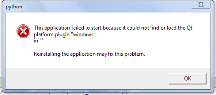
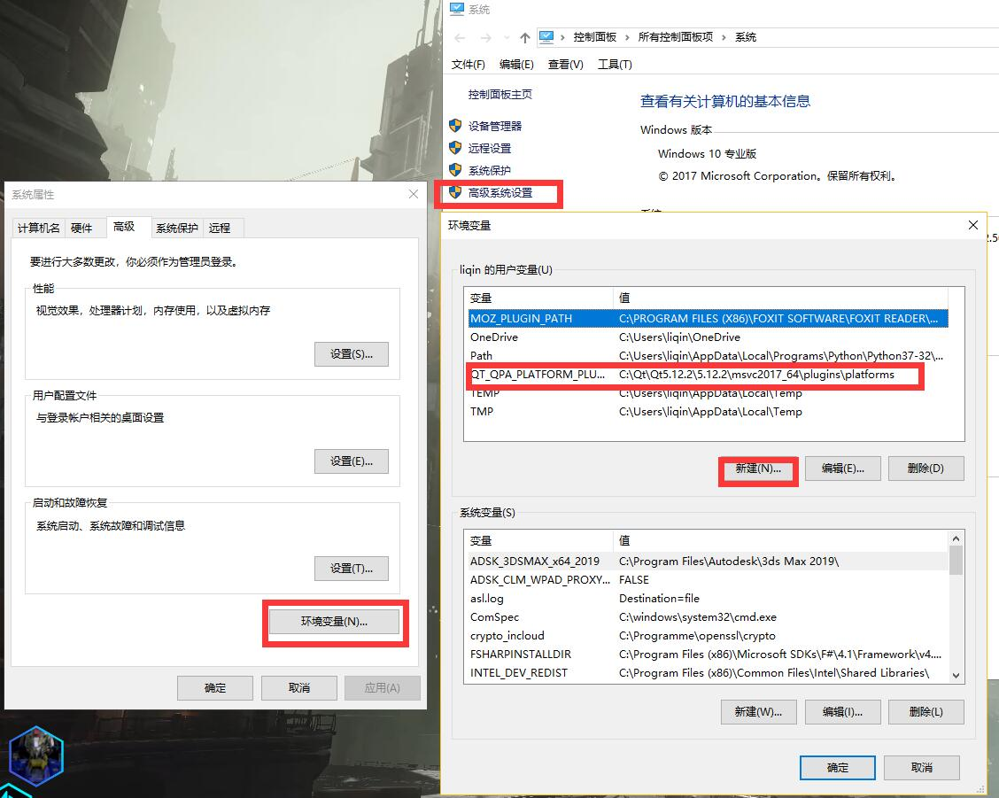
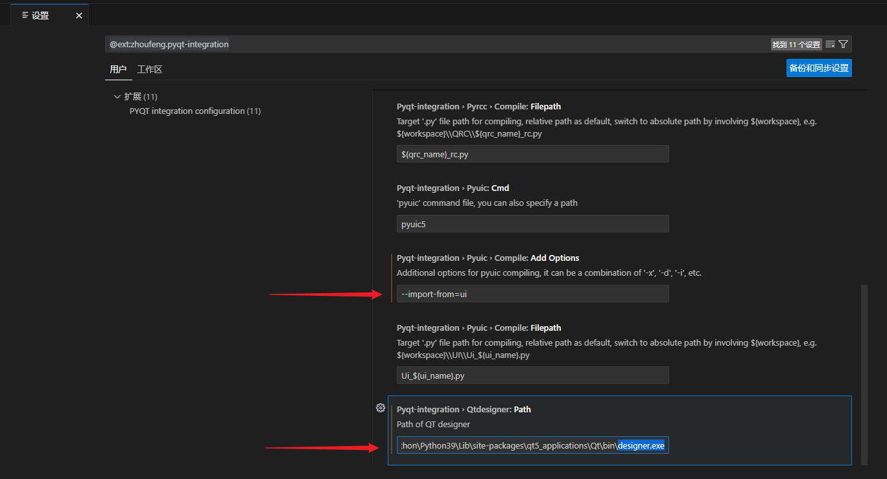
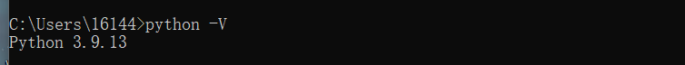
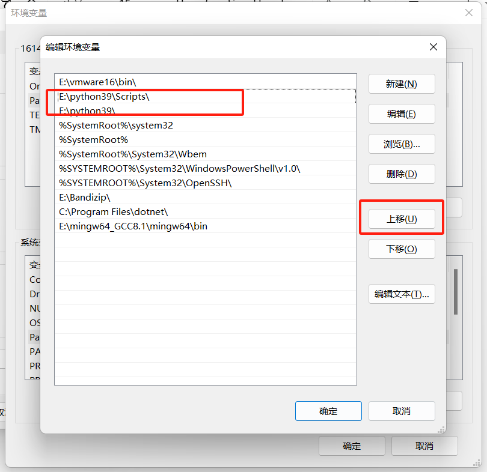

<!DOCTYPE lake>
<p data-lake-id="u6224bfd4" id="u6224bfd4"><span data-lake-id="ua848fa08" id="ua848fa08">PyQt官网:</span><a data-lake-id="ue6b6b4ec" href="https://riverbankcomputing.com/software/pyqt/intro" id="ue6b6b4ec" rel="noopener noreferrer" target="_blank"><span data-lake-id="uc9216954" id="uc9216954">https://riverbankcomputing.com/software/pyqt/intro</span></a></p><h2 data-lake-id="aOJWb" data-lake-index-type="2" id="aOJWb"><span data-lake-id="ub178184b" id="ub178184b">PyQt简介</span></h2><p data-lake-id="u6e4acb48" id="u6e4acb48"><span data-lake-id="u15980244" id="u15980244">PyQt是一套Python的GUI开发框架,即图形用户界面开发框架.</span></p><p data-lake-id="u7042b568" id="u7042b568"><span data-lake-id="u542f52d8" id="u542f52d8">Python中经常使用的GUI控件集有PyQt、Tkinter、wxPython、Kivy、PyGUI和Libavg</span></p><p data-lake-id="u67f9f95f" id="u67f9f95f"><span data-lake-id="ubf08fe19" id="ubf08fe19">其中PyQt是Qt(c++语言实现的)为Python专门提供的扩展</span></p><p data-lake-id="u178de531" id="u178de531"><span data-lake-id="ub83fe4c4" id="ub83fe4c4">​</span><br/></p><h3 data-lake-id="Lfp1O" data-lake-index-type="2" id="Lfp1O"><span data-lake-id="ufe4acd06" id="ufe4acd06">Qt</span></h3><p data-lake-id="ued79ed55" id="ued79ed55"><span data-lake-id="u1b76c627" id="u1b76c627">Qt 是一个1991年由Qt Company开发的跨平台C++图形用户界面开发框架。<br/></span><span data-lake-id="ud5641953" id="ud5641953">2008年，Qt Company被诺基亚公司收购，Qt也因此成为诺基亚旗下的编程语言工具。<br/></span><span data-lake-id="u88c9597e" id="u88c9597e">2012年，Qt被Digia收购。<br/></span><span data-lake-id="udc693cb6" id="udc693cb6">2014年4月，跨平台集成开发环境Qt Creator 3.1.0正式发布</span></p><h3 data-lake-id="eCV8P" data-lake-index-type="2" id="eCV8P"><span data-lake-id="u72b0f04c" id="u72b0f04c">PyQt</span></h3><ul list="u18870df8"><li data-lake-id="ub754dccb" fid="u7a6cb92f" id="ub754dccb"><span data-lake-id="u722005b2" id="u722005b2">基础高性能的Qt的图形界面控件集</span></li><li data-lake-id="u4a2a0805" fid="u7a6cb92f" id="u4a2a0805"><span data-lake-id="u65350b7a" id="u65350b7a">能够跨平台运行在windows、linux和macos等系统上</span></li><li data-lake-id="u7fecab8b" fid="u7a6cb92f" id="u7fecab8b"><span data-lake-id="u1cff25c6" id="u1cff25c6">使用</span><code data-lake-id="u7c792b6d" id="u7c792b6d"><span data-lake-id="u3fa70c84" id="u3fa70c84">信号/槽(signal/slot)</span></code><span data-lake-id="u658be7ca" id="u658be7ca">机制进行通信(其它语言采用回调方式)</span></li><li data-lake-id="u1d1945b1" fid="u7a6cb92f" id="u1d1945b1"><span data-lake-id="u1bf15541" id="u1bf15541">对Qt库的完全封装</span></li></ul><p data-lake-id="u729b4433" id="u729b4433"><br/></p><h3 data-lake-id="vtuED" data-lake-index-type="2" id="vtuED"><span data-lake-id="ub8cca2b0" id="ub8cca2b0">关于PyQt和PySide</span></h3><p data-lake-id="ua9ad588d" id="ua9ad588d"><span data-lake-id="ue920873f" id="ue920873f">首先推荐的就是PyQt，PyQt是Qt的Python版本，而Qt是一种成熟的GUI开发框架，底层是由C++开发而成，采用PyQt开发GUI，后面可以进一步转C++开发Qt，因此，如果想要入手图形用户界面开发，PyQt是非常推荐的一款框架，需要注意的是，PyQt有两种许可协议，分别是GPLv3许可证和需要购买版权的商业许可证，GPLv3是强开源协议，意味着，如果你的应用程序里面使用了PyQt，那么你的程序必须开源，否则可能收到法院传票，如果想要闭源商用，就必须购买Riverbank Computing公司的商业许可证。</span></p><p data-lake-id="u881737ea" id="u881737ea"><span data-lake-id="ude9f64fa" id="ude9f64fa">但如果你既想享受Qt的强大功能，又想闭源商用，那么PySide适合你，说到PySide，就不得不说Qt与PyQt之间的恩怨，Qt的研发公司是Nokia，Riverbank Computing公司使用Python封装了Qt研发出PyQt，而PyQt从诞生时就是GPLv3协议，因此Nokia与Riverbank Computing谈判，希望将PyQt的协议修改为LGPLv3，可以带来更多的商业用户，但是两个公司谈崩了，所以Nokia自己重新研发了Py版本的Qt也就是PySide，后来Nokia将Qt和PySide卖给了Digia公司。PySide官网：</span><a data-lake-id="ud8422351" href="https://doc.qt.io/qtforpython-6/" id="ud8422351" rel="noopener noreferrer" target="_blank"><span data-lake-id="u0b66a313" id="u0b66a313">https://doc.qt.io/qtforpython-6/</span></a></p><blockquote data-lake-id="u51a55528" id="u51a55528"><p data-lake-id="uca8dec07" id="uca8dec07"><strong><span data-lake-id="u5e960363" id="u5e960363">总结：</span></strong></p><ul list="u01bfa794"><li data-lake-id="u7340fb30" fid="ue0f83e7f" id="u7340fb30"><span data-lake-id="uc05f8546" id="uc05f8546">如果不做商业项目，强烈建议使用PyQt，资料多，稳定。全局替换成PySide也很方便。</span></li><li data-lake-id="uddcff365" fid="ue0f83e7f" id="uddcff365"><span data-lake-id="u986e1af9" id="u986e1af9">需要开发闭源商用软件的就用PySide。所有API用起来几乎一样。</span></li><li data-lake-id="u3f69b551" fid="ue0f83e7f" id="u3f69b551"><span data-lake-id="u6e42756c" id="u6e42756c" style="color: rgb(18, 18, 18)">PyQt5的对应版本是PySide2</span></li></ul></blockquote><h2 data-lake-id="IlTa2" data-lake-index-type="2" id="IlTa2"><span data-lake-id="u2b641d6d" id="u2b641d6d">通过pip安装PyQt5</span></h2><ul list="u38899c9f"><li data-lake-id="u9ab4e2ed" fid="u31579969" id="u9ab4e2ed"><code data-lake-id="u9220526b" id="u9220526b"><span data-lake-id="u8e9f7b58" id="u8e9f7b58">pip install PyQt5</span></code><span data-lake-id="u4a4fd68c" id="u4a4fd68c">			安装</span><code data-lake-id="u64035dee" id="u64035dee"><span data-lake-id="ua1cf3851" id="ua1cf3851">PyQt5</span></code></li><li data-lake-id="u0b71330b" fid="u31579969" id="u0b71330b"><code data-lake-id="uccf8ae98" id="uccf8ae98"><span data-lake-id="ue1c0788f" id="ue1c0788f">pip install PyQt5-tools</span></code><span data-lake-id="u8677d269" id="u8677d269">	安装</span><code data-lake-id="u82c90d4d" id="u82c90d4d"><span data-lake-id="u551e7d64" id="u551e7d64">Qt</span></code><span data-lake-id="u9ab7c5d9" id="u9ab7c5d9">工具软件</span></li><li data-lake-id="u7c3a4799" fid="u31579969" id="u7c3a4799"><code data-lake-id="u1c37d861" id="u1c37d861"><span data-lake-id="u795e71de" id="u795e71de">pip install PyQt5-stubs</span></code><span data-lake-id="u6b7c9cbd" id="u6b7c9cbd">	安装PyQt5语法检测包（可选）</span></li></ul><p data-lake-id="ubf665009" id="ubf665009"><br/></p><p data-lake-id="uc1794330" id="uc1794330"><span data-lake-id="uae8c020e" id="uae8c020e">安装完成之后可以在Python的安装目录</span><code data-lake-id="u0833931c" id="u0833931c"><span data-lake-id="ua1680062" id="ua1680062">/Lib/site-packages</span></code><span data-lake-id="u24be7b0b" id="u24be7b0b">中找到PyQt5目录。</span></p><p data-lake-id="u3e2f6e6a" id="u3e2f6e6a"><span data-lake-id="u558ad467" id="u558ad467">路径示例：</span><code data-lake-id="ub63cecf1" id="ub63cecf1"><span data-lake-id="u3040519c" id="u3040519c">%LOCALAPPDATA%\Programs\Python\Python39\Lib\site-packages</span></code></p><p data-lake-id="u0b01b043" id="u0b01b043"><span data-lake-id="u4f38dff7" id="u4f38dff7">​</span><br/></p><p data-lake-id="u2f9dc2ba" id="u2f9dc2ba"><strong><span data-lake-id="ue80a204e" id="ue80a204e">如果安装缓慢，请配置pip源(建议用方式二)：</span></strong></p><a class="yuque-card-link" href="https://www.yuque.com/icheima/python/cax0gftdb4g16g32">yuque：yuque</a><h2 data-lake-id="RKXrU" data-lake-index-type="2" id="RKXrU"><span data-lake-id="u3b3e5f39" id="u3b3e5f39">无法运行处理</span></h2><p data-lake-id="u0c12c917" id="u0c12c917"><span data-lake-id="uef02f35a" id="uef02f35a" style="color: #DF2A3F">如果运行PyQt程序报如下错误，</span><span data-lake-id="u58d09755" id="u58d09755" style="color: #000000">不报错不需要配置！：</span></p><p data-lake-id="u4ffedb93" id="u4ffedb93"></p><p data-lake-id="uc8da787e" id="uc8da787e"><span data-lake-id="ue8a3f239" id="ue8a3f239">则将如下变量添加到系统环境中：</span></p><p data-lake-id="u8cb60ad9" id="u8cb60ad9"><code data-lake-id="u30b20047" id="u30b20047"><span class="lake-fontsize-11" data-lake-id="u59d3177e" id="u59d3177e" style="color: rgb(51, 51, 51)">QT_QPA_PLATFORM_PLUGIN_PATH</span></code></p><p data-lake-id="u8faa4925" id="u8faa4925"><span class="lake-fontsize-11" data-lake-id="uda87cdaf" id="uda87cdaf" style="color: rgb(51, 51, 51)">值为：</span></p><p data-lake-id="u12f08410" id="u12f08410"><code data-lake-id="u62a8f06b" id="u62a8f06b"><span class="lake-fontsize-11" data-lake-id="ufe440a29" id="ufe440a29" style="color: rgb(51, 51, 51)">%LOCALAPPDATA%\Programs\Python\Python39\Lib\site-packages\PyQt5\Qt5\plugins\platforms</span></code></p><p data-lake-id="ufe3e5e11" id="ufe3e5e11"><span class="lake-fontsize-11" data-lake-id="ucb538c4f" id="ucb538c4f" style="color: rgb(51, 51, 51)">重启编辑器或控制台即可</span></p><blockquote class="lake-alert lake-alert-info" data-lake-id="ufa214989" id="ufa214989"><p data-lake-id="u618166d9" id="u618166d9"><span class="lake-fontsize-11" data-lake-id="ub85c7fa9" id="ub85c7fa9">注意这里的</span><code data-lake-id="ub142f069" id="ub142f069"><span class="lake-fontsize-11" data-lake-id="u259db266" id="u259db266" style="color: rgb(51, 51, 51)">%LOCALAPPDATA%\Programs\Python\Python39</span></code><span class="lake-fontsize-11" data-lake-id="u34e11509" id="u34e11509" style="color: rgb(51, 51, 51)">是你的Python安装路径，如果安装时不是默认路径，请将此部分内容替换成自己的安装路径。</span></p><p data-lake-id="uc765cf92" id="uc765cf92"><span class="lake-fontsize-11" data-lake-id="u05946570" id="u05946570" style="color: rgb(51, 51, 51)">建议直接使用Everything搜索qoffscreen.dll，找到目录</span></p></blockquote><p data-lake-id="ubddaed31" id="ubddaed31"></p><p data-lake-id="u412519f6" id="u412519f6"><br/></p><h2 data-lake-id="DIQ5d" data-lake-index-type="2" id="DIQ5d"><span data-lake-id="uf34ad380" id="uf34ad380">VSCode配置PYQT插件</span></h2><p data-lake-id="ue6a74563" id="ue6a74563"><span data-lake-id="u8a4500a8" id="u8a4500a8">安装</span><code data-lake-id="u9885acfc" id="u9885acfc"><span data-lake-id="u8d347ae3" id="u8d347ae3">PYQT Integration</span></code><span data-lake-id="uc10140bf" id="uc10140bf">插件，可以帮我们自动生成UI相关代码和资源。最好进行如下配置：</span></p><ol list="ud5ccc8b1"><li data-lake-id="u51be3a39" fid="u19d6e495" id="u51be3a39"><span data-lake-id="u675c395c" id="u675c395c">配置</span><code data-lake-id="u7066aaee" id="u7066aaee"><span data-lake-id="ubc22205d" id="ubc22205d">.ui</span></code><span data-lake-id="u794cfaa0" id="u794cfaa0">生成的</span><code data-lake-id="u71c4f9fe" id="u71c4f9fe"><span data-lake-id="uba0c47d9" id="uba0c47d9">.py</span></code><span data-lake-id="u67370aa0" id="u67370aa0">文件中导入资源的路径：</span><code data-lake-id="uc3563edd" id="uc3563edd"><span data-lake-id="ue6b5a732" id="ue6b5a732">--import-from=ui</span></code><span data-lake-id="u6638ccfd" id="u6638ccfd"> 指向ui目录</span></li><li data-lake-id="ub25b219f" fid="u19d6e495" id="ub25b219f"><span data-lake-id="u03108bfa" id="u03108bfa">配置</span><code data-lake-id="uac9644df" id="uac9644df"><span data-lake-id="uded0639c" id="uded0639c">designer.exe</span></code><span data-lake-id="u0a3e59ee" id="u0a3e59ee">可执行程序的路径，例如我的路径：</span><code data-lake-id="u4c9a02c3" id="u4c9a02c3"><span data-lake-id="ub6da5060" id="ub6da5060">D:\Programs\Python\Python39\Lib\site-packages\qt5_applications\Qt\bin\designer.exe</span></code></li><li data-lake-id="ud02ef194" fid="u19d6e495" id="ud02ef194"><span data-lake-id="ua9374ca5" id="ua9374ca5">在Python安装路径下找</span><code data-lake-id="u2b00f182" id="u2b00f182"><span data-lake-id="ue2463e50" id="ue2463e50">designer.exe</span></code><span data-lake-id="u0f4e3721" id="u0f4e3721">，建议用everything搜索</span><code data-lake-id="u67615b2f" id="u67615b2f"><span data-lake-id="u28dea008" id="u28dea008">designer.exe</span></code><span data-lake-id="u0c6813dc" id="u0c6813dc">。如果搜不到，请先确保已安装</span><code data-lake-id="u120303ad" id="u120303ad"><span data-lake-id="u4e79fae4" id="u4e79fae4">PyQt5-tools</span></code><span data-lake-id="u9df51812" id="u9df51812">, 安装方法：</span><code data-lake-id="u4ee2b6f3" id="u4ee2b6f3"><span data-lake-id="u8e207cb6" id="u8e207cb6">pip install PyQt5-tools</span></code></li></ol><p data-lake-id="u66ccfef4" id="u66ccfef4"><span data-lake-id="u104ed9f7" id="u104ed9f7">​</span><br/></p><p data-lake-id="u38836ea5" id="u38836ea5"><span data-lake-id="u86d41ab3" id="u86d41ab3">其他不用变</span></p><p data-lake-id="ue62ed8c1" id="ue62ed8c1"></p><h1 data-lake-id="VSzig" id="VSzig"><span data-lake-id="u7996e0a4" id="u7996e0a4">5.小车项目还需要装两个环境</span></h1><span class="yuque-card-unsupported">[codeblock]</span><h1 data-lake-id="OxbFZ" id="OxbFZ"><span data-lake-id="ua018f95d" id="ua018f95d">6.如果同学们中的电脑中装有python其他版本</span></h1><p data-lake-id="u3c48759f" id="u3c48759f"><span data-lake-id="u5c8fdfdf" id="u5c8fdfdf">首先使用cmd查看同学电脑中的python版本</span></p><p data-lake-id="uab0c3fae" id="uab0c3fae"></p><p data-lake-id="ua51299ae" id="ua51299ae"><span data-lake-id="uac1625b8" id="uac1625b8">然后去到环境变量中</span></p><p data-lake-id="ufabff722" id="ufabff722"></p><p data-lake-id="u6430adbf" id="u6430adbf"><span data-lake-id="u3f879eb2" id="u3f879eb2">将py39环境进行上移让windows默认打开的是py39</span></p>